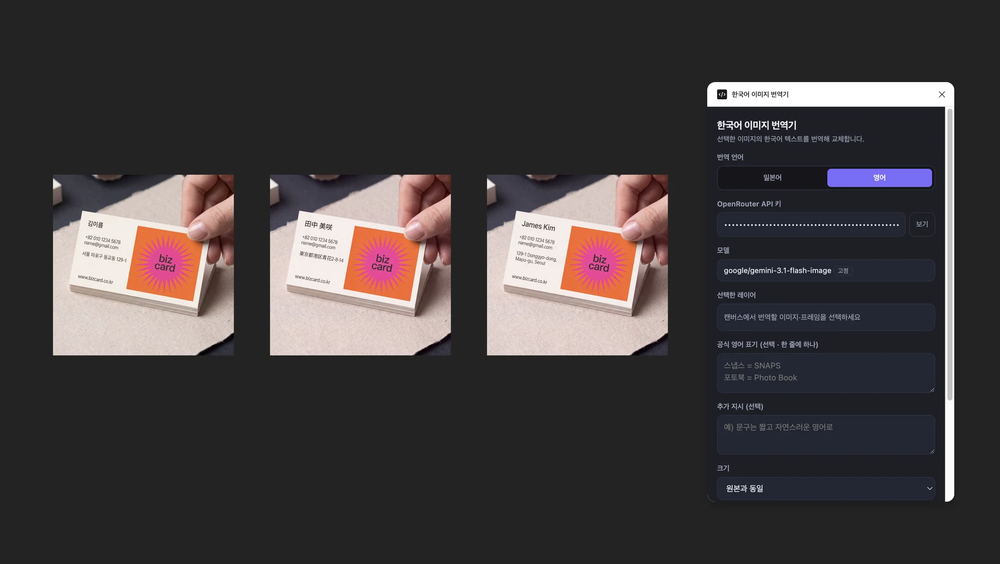

← 모든 작업물AI / 04
AI · Figma Plugin
Figma 이미지 번역 플러그인
2026- 제작 연도
- 2026
- 역할
- 플러그인 개발
기여도 및 작업 범위
Figma에서 선택한 이미지 속 한국어를 일본어 또는 영어로 번역하는 플러그인을 직접 개발했습니다. OpenRouter를 연동해 여러 이미지 레이어를 한 번에 처리하고, 번역 결과를 Figma 캔버스에 바로 적용할 수 있습니다.
Figma에서 번역하기
